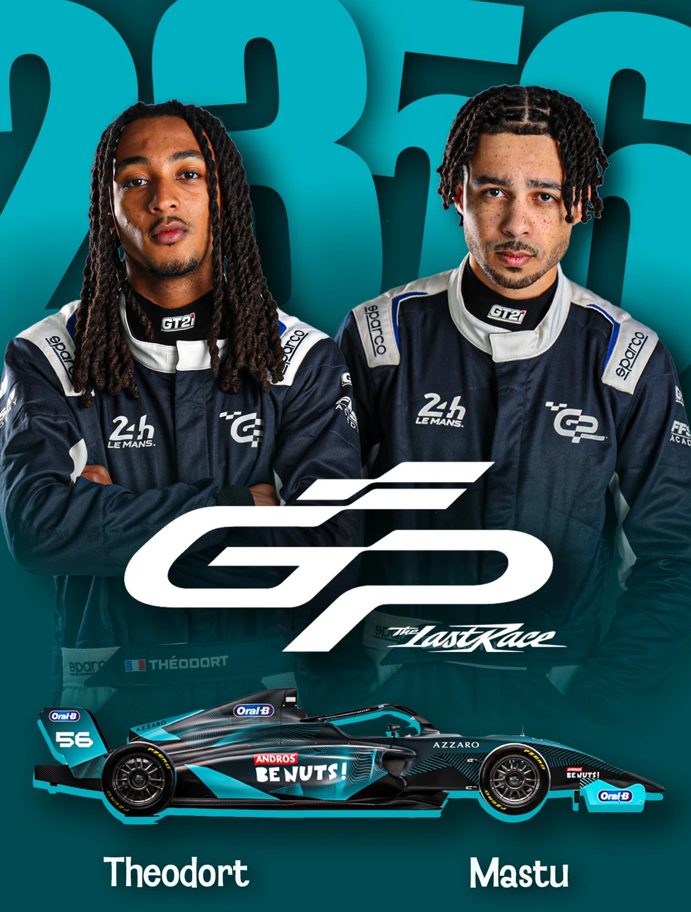
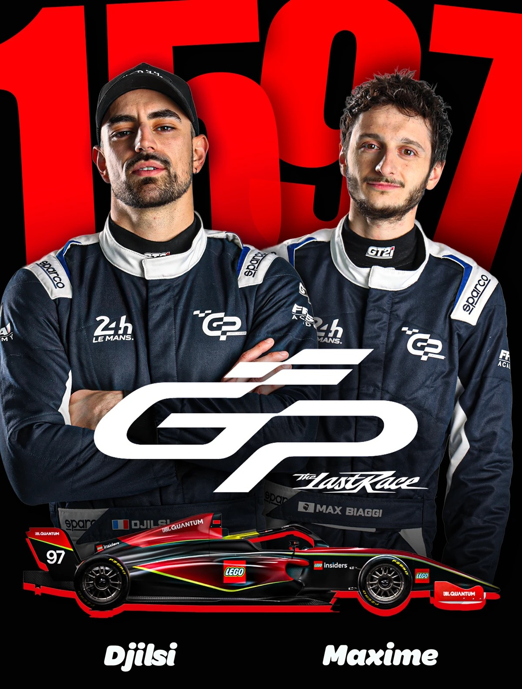
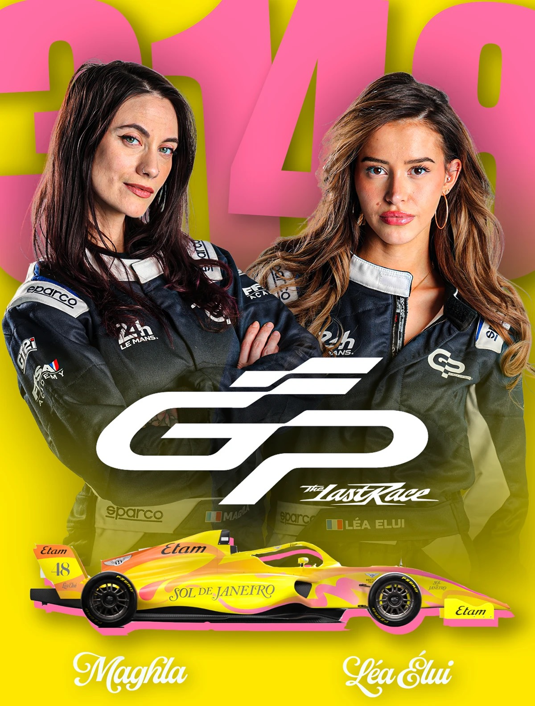
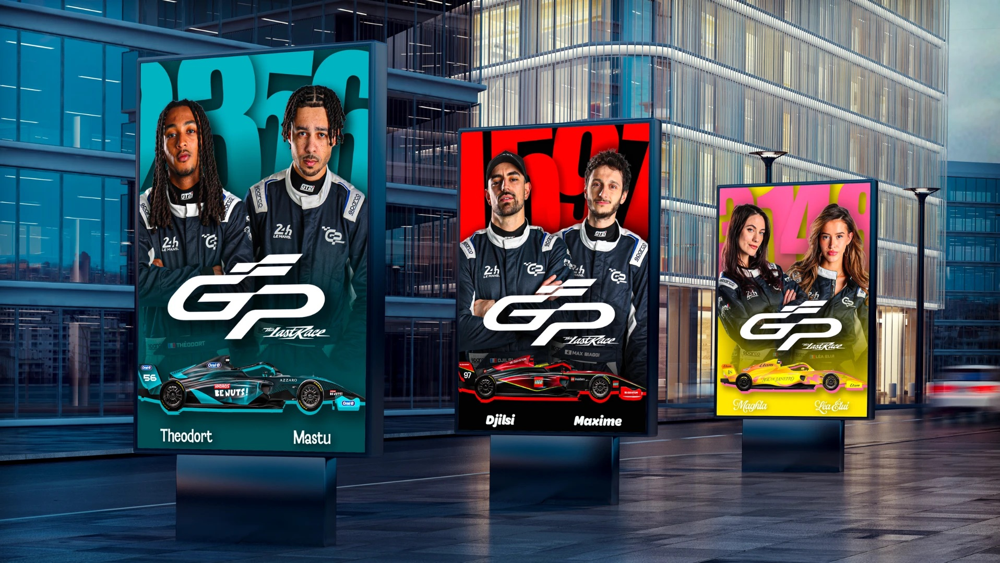

01
Affiches GP Explorer
J’ai réalisé trois affiches fictives annonçant trois des écuries participantes au GP Explorer « The Last Race », en mettant en avant l’identité visuelle de leurs sponsors respectifs.
- Contexte
- Projet fictif
- Outils





